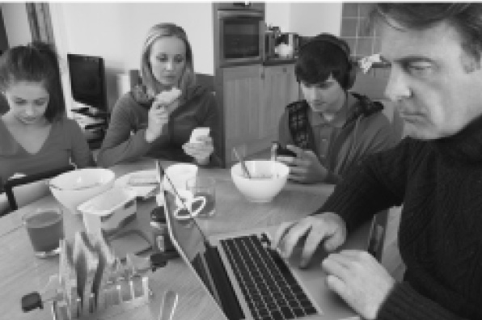

美好人生由什么构成？
想在正确的环境里追求幸福，我们首先需要知道美好人生究竟是什么样的。美好人生的显著特征之一，就是像一场好戏或伴侣家人一次愉快的拜访一样，总有结束的一刻——人终有一死。这可能不是什么值得期盼的时刻，但也没有那么糟糕。假如老年人永生不死，年轻人很快就会觉得四处都很拥挤，对于老年人一遍又一遍讲述同样的故事感到非常厌烦。假如你独自获得长生不老的能力，则会很快感到孤独和不适，好像自己被整个世界抛弃。我们并不知道死后究竟会发生什么，但我想应该没有人愿意在非常不舒服的地方死去。假如根本不存在死后的世界，那么死亡的感觉应该跟出生之前差不多。这也没那么糟糕嘛，是不是？
大限将至之前，你可能会回顾漫长的人生之路，进行最后的清点。你是否度过了美好的一生？这个问题非常重要，你会很想知道正确答案。但我们如何进行判断呢？什么样的人生才能算作美好？
令人惊讶的是，我们很难定义美好人生。或许有人已经意识到这一点了。但我想斗胆提出一个建议，正确与否我不敢肯定。其实，我并没有找到很多讨论类似问题的文献，所以我的说法可能不如读者预期的那样有理有据。但我觉得这会是一个合理的出发点。
让咱们假设美好人生等同于你有充分理由肯定这段人生。换句话说，美好人生指的就是你有充分理由对其感到满意的人生 。（在这里我只是简短地陈述这个观点，未来有机会再详细论证。）我们把这个叫作美好人生的“有充分理由认可”判断法。
为了满足不同目的，可能会有其他能够合理判断“美好人生”的方式。当个人或政府设立目标时，或许更应该将重心放在实现美好人生中要求更高的方面——这是不是令人向往的人生。我们把这个叫作美好人生的“有充分理由向往”判断法。
不过，在这里，我很想知道人们如何评估自己正在度过的人生，或者如何回顾自己的人生。问题在于，我们什么时候才有资格对自己的人生表示肯定或满意呢？在过去两章中，我们已经讲到，美好人生至少有两个基本组成部分：其一，对你来说 ，你的人生是否美好；其二，你的生活方式是否正确。这两部分就是福祉和美德。
在第三章中，我们说到，你是否真正 满意自己的人生其实并没那么重要。不过在此处，重点在于，你是否有理由对自己的人生感到满意。你是否有理由能够 对自己的人生表示满意。问题的关键在于你的生活是否符合一定标准，而不是你自己的情绪状态。就算你自己的实际态度没有什么影响，你的生活是否符合标准依然非常重要。
有趣的是，你的生活对你来说是否美好，跟你的生活顺不顺利没有什么关系。你不需要顺风顺水，万事圆满，你也不需要拥有很高的福祉水平。只要你觉得自己的经历非常美好就行。因此，只要你觉得自己的人生值得一过 ，总比没有活过要好，说不定就够了。但这样的生活听起来好像没有什么吸引力，刚好值得一过的人生似乎顶多也就算还行、能接受，或者可以忍受。因此我们可以设定，评判一个人的人生是否真的很美好，必须要看此人的人生是否非常 值得一过，是否比此人从未来到人世要好得多。这听起来确实很含糊，但我们也没有办法给出更细致的评判标准了。
我们已经说过，美好人生的一部分跟你的福祉 有关，另一部分则大致关乎道德，或者说美德 。你的行为举止是否端正？你有没有做出正确的选择并且好好表现？做出正确选择、好好生活并不仅仅是道德要求，从长远来看，这等于要求我们理性、明智地生活，其中包括在个人事务上小心谨慎、保持尊严、尽力享受生活等等。假如你的生活轨迹非常端正，人们会评价你的生活令人称羡 。
因此，明显可以看出，道德是美好人生中最重要的部分，也是最需要正确对待的部分。第七章中已经初步涉及，在这里让我们进一步阐释这一点。在评判美好人生时，我们可以尝试“悼词测试法”，即假设一个人已经离开人世，你正在为此人发表悼词。当然，找一个空房间假装一下就好，这样就不用担心会冒犯到什么人。在发表悼词的时候，你会说这个人度过了美好的一生吗？
一般来说，我们不会评价坏人的人生很美好。如果你觉得某人是一个将别人踩在脚底的人渣，便不太可能觉得这个人的人生是美好的。就算这个人富有、幸福、受人爱戴，几乎没有为自己的恶行受到任何报应，你也不会觉得他拥有美好人生。
另一方面，从脑海中搜寻出一个你觉得非常好的人，他一生勇敢、善良、公平，富有道德感，令人钦佩。你很有可能会觉得这个人的人生非常美好。亚伯拉罕·林肯和温斯顿·丘吉尔都饱受抑郁症的困扰；马丁·路德·金引领了美国人权运动，但他的事业并非一帆风顺，而且39岁就遇刺身亡；纳尔逊·曼德拉在监狱里度过了27年，蹉跎韶华。以上这些人中没有一个拥有令人嫉妒的生活，然而他们常常被人们当作美好人生的典范 。
当我们说到美好人生的时候，难道我们只是在说道德 高尚或奉行美德的人生吗？当然不是。我们再使用一下悼词测试法。难道在总结某人的一生的时候，当事人是否享受自己的人生并不重要吗？他到底是幸福，还是悲惨？他是成功实现了自己的重大目标，还是一败涂地？按照一般观点来看，曼德拉的人生似乎挺美好的。但事实上，他在牢狱中度过近三十年，婚姻因此分崩离析，这些事实至少会让人停下来琢磨一下自己的判断是否正确。假如他没有经受这些劫难，依然取得了伟大的成就，显然他的人生会更美好。
现在设想有一个人，善良、勇敢、正直，为他人做善事，但受到一连串可怕的折磨，包括恼人的病痛、被人排斥、当众受辱、亲眼看见自己的孩子接连死去、一生受到抑郁症的折磨并常常想到自杀，最终，独自在痛苦中英年早逝。他这一生中极少有什么事能算得上安慰，以至于恨不得自己从未来到人世。他作为一个人的美好固然难以忽视，但我们很难说他的一生是美好的。恰恰相反，他的生活听起来让人唯恐避之不及，很难给予肯定。
顺风顺水、万事圆满或许不是美好人生的必要前提，但你的人生必须得顺利到某种程度，才会值得一过。最重要的是，你自己要表现得体。美好人生既是你尽兴度过的一生，也是值得体验的一生。
展望美好人生
由此，关于美好人生我们得到了一个令人快乐的结论，那就是美好人生并不难求。毕竟，其中有关福祉这一部分不难满足。就连倒霉蛋查理·布朗 [7] 那错漏百出的平凡人生也依然值得度过。大部分时候，生活中充满小确幸，几乎每个小时都能邂逅令人快乐的香气、愉悦的视听感受、惬意的感觉和有趣的思想。这些小确幸并不明显，因为我们已经对此习以为常，而且人脑本身就会对负面的东西反应更强烈（这种现象叫作“消极偏见”）。
没错，有时生活中的折磨远远大于快乐；有时我们会希望自己彻底失去意识；有时我们会觉得假如未来不过如此，实在没有必要活着。然而，当我们垂垂老矣，没有人会在弥留之际心想：“要是我17岁的时候自我了断就好了。自杀才是我应该选择的路。”反正我从来没有听到谁这样说。最终，生活带来的伤痛会减弱，年龄使我们成熟，让我们从大局上来看待问题，从而意识到活着是多么美好。
既然美好生活中的福祉标准不难达到，那么对我们中大部分人来说，通向美好人生道路上的最大阻碍，就是我们自己的选择。比起不幸福或不成功，我们自己的恶形恶状更容易破坏我们的人生。假如你虐待家人、欺骗别人、自私或刻薄，你会很难真心承认对自己的生活感到满意。
不过，这也说明美好人生中最重要的元素完全在你自己的掌控之中 ——你可以自己选择是否规矩行事。很大程度上，你是否拥有美好人生取决于你自己。你不一定能找到幸福，但你在面对生活中的厄运时可以保持善良、尊严和优雅。
我认为，大部分人正过着美好人生，回首往事，也会觉得自己的人生很美好。他们的人生都值得肯定。世界范围内，大多数人自己评估的生活满意度很高，其原因很可能就是大部分人都有充分理由 对自己的人生感到满意。这不表示他们生活幸福或万事如意，只能说明他们觉得自己的人生挺美好的，并且能够欣赏到人生的价值。甚至可能应该有更多 人对自己的生活表示满意。很多人都没意识到其实他们的生活已经很美好了。
大部分人的生活值得一过，并且他们的举止可以说非常不错。他们善待家人朋友、正视债务、诚实营生、履行义务，过着体面、有尊严的生活。即便受到严重身心障碍困扰的人也可以选择笑对人生。他们也可以为身边的人带来欢乐、意义和启发。不管你的成就多么微不足道，只要知道自己承担了应有的责任、对爱略有心得、领略过地球和人类显赫文明的吉光片羽，你就能够对自己的人生感到满意。
就我自己来说，我能想到的大部分美好人生都属于平凡度日的普通人。（不过仔细想来，就算最普通的人生也十分精彩。）事实上，美好人生与成就和名利之间或许存在此消彼长的关系。名垂青史的伟大成就一般都要求当事人一腔热忱、心无旁骛，牺牲掉更多美好人生的基本要素，比如家庭关系等。我遇见过许多赫赫有名的人物，在各自的领域硕果累累。但他们中不少人为人举止并不惊艳，我绝对不会羡慕他们的家人。
一位用自己的洞察力、敏感、智慧、耐心和机敏守护家庭几十年的主妇可能很容易被世人忽视，但比起伍尔夫、维特根斯坦、梵高和海明威，我更希望我的孩子可以活得像这位主妇一样。我们这些旁观者清的人当然要庆幸有这些伟大的历史人物为后人留下可以享用的文明果实，但这并不表示我们想像他们一样生活。
设定优先级
就算知道美好人生的标准是什么，但距离实现目标还有很长的路。我们怎么才能把本书中宣扬的观点运用在现实中呢？根据之前的讨论，生活中的优先级到底应该是什么？
这个问题没有什么放之四海而皆准的答案。因为我们每个人在生活中都会遇到不同的问题，产生不同的需求。而且，我也不具备为别人提供人生建议的专业素养。不过，我们已经花了很多篇幅讨论这个问题，似乎至少可以总结一下我们的优先级应该是什么。确实，尽管我们每个人都不一样，但还是有相似之处。全人类都会遇到很多类似的问题，也有很多类似的需求，我们还共享很多价值观。我们可以跟来自世界各地的人交朋友，也可以欣赏相同的文学故事和电影。不会有人看完《星球大战》之后认为黑武士真是个大好人。
因此，接下来我将会提供几点建议，希望大家可以将这些最重要的信息记在脑中。我们很容易在这些领域犯错，导致生活急转直下。这些经验可能不适用于所有人，但对大部分人和大部分情况应该有所帮助。这些反思都建立在我本人的哲学素养和科学文献阅读上，但并非专业咨询，我也不会提供什么真实论据。我只是总结了现实生活中的重要影响因素，经过思考，为大家提供一些建议。大家可能会对这些问题有自己的理解，或许更适合自己的个性和处境。
假如你的朋友、手足或孩子正在思考自己的生活方式，你会给他们提供什么样的优先级列表？
与重要的人和事物建立联系
语出一个主要依靠短信与人交流的16岁男孩
之前我们已经说过，与重要的人和事物建立联系，既是幸福的主要来源之一，同时也是好好生活的重要组成部分。尤其是当下，在多种力量的作用下，我们很容易被琐事所缠绕，常常花太多清醒的时间去做不值得或不重要的事情。家人和朋友很明显是值得我们花时间相处的对象，同时，美、卓越和其他有价值的东西也都是我们生活中意义的主要来源。我们常常在葬礼上才会意识到自己没有在这些方面花足够的时间。
我曾经与一个非常不幸福、支离破碎的家庭相处了一段时间，这个家庭体现出所有物质主义生活方式的迹象——工作是为了尽可能多赚钱，钱则被花在豪车和其他社会地位的象征上。购物是他们的主要休闲活动之一，家庭成员中有一名年轻女子甚至认为自己是“购物狂”。家中大部分人在谈论起他们觉得非常重要的话题或任何有实质内容的话题时总是茫然若失，他们的生活中也不常出现深刻或有内涵的对话。家庭成员彼此孤立，每个人都生活在自己的小世界里。
然而单独来看，他们每一个人都是招人喜欢的好人，他们的核心价值观都很健康，与其他人没有什么分别。他们都很关心自己的家人和其他熟人，毫无疑问，他们也很重视践行一些基本的美德，如诚实、公平、善良和忠诚。他们珍视个人取得成就的回忆、与家人共度的时光和其他人生中有意义的事情。
其实他们很有可能只是在追求经过大众文化所认可的人生目标，而且这些目标唾手可得。可能他们从来没有想过，除了单一的对于金钱、财产和地位的追逐之外，人生还有其他受人尊敬的可能性。于是乎，他们选择了能够满足自己欲望的生活方式，却丢失了真正在乎的东西。这次相处经历令我灰心丧气，因为我意识到自己也身处这样一种令人深切失望的文化之中，这种文化迫使我们全力去追逐一种与自己价值观严重不符的人生。
物质主义对于建立联系来说是一种威胁，无处不在的诱惑则是另外一种威胁。写作本书期间，我们刚踏入新世纪不久，才经历了十到二十年的时光，我们面临着将来有可能无处不在的人工刺激，如手机、短信、手持电子游戏机、家用游戏机、iPad、iPod、iPhone、脸书、推特、互联网，肯定还有一大堆我忘了罗列在这里的东西。我很喜欢使用这些科技产品，它们的流行是有道理的。有时它们也会推动人际交流，例如帮助我们跟遥远的朋友和亲戚保持联系。
但这些科技产品也有很多得不偿失的地方，而且会令人上瘾。拥有一部iPhone就像把一包甜甜圈和巧克力挂在脖子上一样。没错，从理论上来说，你可以 将自己对科技产品的使用控制在一个健康的范畴，但实际很有可能做不到。还没等你意识到问题出在哪里，你已经在母亲的葬礼上跟朋友发起信息、戴着耳机吃晚餐、半夜醒来刷新脸书推送，以及在沙滩上玩《使命召唤》了。我们变成了当代食莲者，漠然以对现实的召唤。
最坏的情况是，我们会失去反思的能力，无法获得宁静，再也不能进行真心的人际交流。或许到时候会出现模拟文字交流，可能也有效果，但这种方式与面对面交谈之间的差距，就像简笔人物画和《蒙娜·丽莎》的差距一样。很快，说不定我们就忘了该如何与人对话，而我们中很多人已经失去这项技能了。（假如我们去探访英国蓝领酒吧之类依然有很多人进行交谈的场所，就会更加清楚地观察到这种趋势。）
现在，只要我们醒着，就可以接上插头，连通网络，但同时也几乎跟一切有价值的东西失去了联系。我不知道长远来看这个问题有多严重。我想人们应该会进行调整，建立新的行为体系和习惯，以防科技夺走日常生活的质感、改变他们的思维方式，让他们一旦失去稳定的电子资源就无所适从。但很明显，我们也有可能矫枉过正。

图16 插电家族的用餐时光
长久以来，另外一种对人们建立关系的威胁与我们的职业选择有关。在选择该从事什么职业的时候，金钱和地位的诱惑会很强大，尤其是在你不确定自己想以什么为生的情况下。不过，我们必须首先提醒自己的一点就是，没有人会平白无故给一个没有认清社会现实的年轻毕业生一大笔钱，却不要求对方付出血肉的代价。金融、法律或其他高薪领域会提供薪资丰厚的初级工作职位，那是因为雇主不得不 付出这么多钱。没有一个正常人会愿意贡献一周80小时的时间在一个半虐待环境下劳心劳力地从事一份根本无法令人满足的工作，除非这人特别绝望，或者工资特别高。工程师或许是个例外，他们获得高薪是因为毕业时已经具备强大的工作技能，但这也是因为他们在学校期间已经付出了大量心血。
想找到满意的高尔夫球同伴，只能要么靠挖墙脚，要么纯靠运气。同样，假如你不偷不抢，运气也一般，那你只有两条致富道路：一是在吸血行业里拼命工作换取高薪，因为别人不愿意做这种工作（如法律界人士）；或者在你真正擅长并且充满激情的领域拼命工作（如史蒂夫·乔布斯）。反正除此之外，很难想象一个正常运转的市场经济体系还能如何分配高额薪资。为什么要支付顶级薪水给某人只为了让他从事轻松有趣、可以偷懒的工作呢？
假如你渴望金钱，那你最好选择把“激情和天赋”当作赚钱的手段，不然你很难过上幸福的生活，或者很难获得有意义的工作经历。假如你真的是一个充满激情、才华横溢的人，那你的工作动力应该不是金钱，驱使你奋斗的是工作本身以及把工作做好的念头。高额工资只能说明你很擅长自己从事的领域。
不过，假如你还能自行选择要不要从事报酬很高的行业，那就说明金钱从一开始对你来说就没有那么重要，不是吗？能够拥有这种选择的自由，就说明你是一个幸运儿，不管你选择从事什么行业，都不太可能变成穷光蛋，除非你选择诗歌或爵士乐。
还记得吗，在美国，家庭总收入超过75000美元后，整体来说收入对幸福便不再有任何影响。2009— 2010年间的一项重要就业调查结果显示，假设一个家庭中有双职工，并且他们薪水相近，那么就算两人都毕业于在职业生涯中期收入最低的 大学专业，他们的收入总和也应该超过75000美元的标准。平均来说，两个经验丰富的社会工作专业或小学教育专业大学毕业生，在职业生涯中期，薪水总和约80000美元。同时，不同大学专业的失业率也没有很大区别，建筑和语言学这两项专业的职业中期失业率最高，同在9%和10%之间。调查还显示，尽管社会工作和老师属于“低薪”行业，但职业安全感很高，小学老师的职业中期失业率为3.4%，名列失业率最低的行业之中，而社工的失业率也只有5.8%。也就是说，每一个 高等教育毕业生，没错，甚至包括哲学专业毕业生，都能找到薪水合理的工作，收入足以达到对幸福造成最低影响的标准。当然，这只是一个国家在某段时间内的数据，而且只是一次调查的结果，不一定能预示你的未来。但这确实提醒了我们，在选择职业的时候，不一定非得太关注工资待遇。
当然，这不表示在选择工作时，我们应该对薪水漠不关心。“随遇而安”在某些情况下是一条绝佳建议，但假如后果是你付不出账单，你的伴侣肯定不会高兴。社工的收入离75000美元的门槛很近，只要工资再低一些，就有可能对幸福感产生很大影响。这其中，必然有一些人的收入低于平均水平，或居住在生活成本较高的地区，这都会使当事人的幸福感大打折扣。就算金钱对他们的幸福感没有任何影响，他们依然很难让自己的孩子进入好学校，遇到急症之类的灾祸时也难以应付，或是很难存够钱退休。
就算不考虑学历，人们也有充分理由选择高薪工作。不过至少从获得幸福的角度来说，平均每人所需的金钱数额并不夸张，而且美国大部分要求本科学历的工作都能轻松帮助人们达到这个标准。钱越多，好处当然也就越多。但没有那么多钱，你也不一定会感到痛苦。
这一切都说明，假如对财富、地位和无关紧要的玩意儿的追求阻碍我们从事有意义、有满足感的工作，我们就是蠢蛋。假如你有雄心勃勃的物质追求，但在实现目标的过程中失去了与重要的人和事物建立联系的能力，那你很有可能已经铸下大错。
放松
几年前我读过一篇关于一位墨西哥商人的访谈。那位商人举家在美国生活了十年，最终回到墨西哥梅里达市定居，据说那是一个非常可爱怡人的城市。商人表示，两个国家各有优劣，但他个人还是更喜欢墨西哥。当记者请他为北边的邻居提供一些建议时，他说：“放轻松！”
当然，墨西哥式的闲散并不适合所有人。首先，这种闲散无益于工作效率。在这个问题上，每个人的个性、文化背景和品位都会产生合理影响。但就算是那些更喜欢快节奏生活方式的人也可以尝试给自己一些喘息的空间，留点儿时间放慢脚步，反思人生，充电休息。至少，他们需要给自己时间来注意身边正在发生的事情。
表面上看来，放轻松似乎与我们之前讲到的建立联系这件事互相矛盾。事实上，它可能确实有一些影响，因为与有价值的事物建立联系的方式之一就是参与有挑战性、有意义的工作。有时在这个过程中，人们没有时间放松。很多情况下，这种妥协是值得的，尤其是当工作特别有意义、特别值得去做的时候。但这也不能改变人们必须为此做出牺牲的事实，毕竟没有人生来就一直设定在“运行”档上。
对于那些一路狂奔的人来说，可能很难相信其实只要做很少的事情就可以避免无聊。假如当代狩猎采集者的社群提供的信息值得参考的话，那么我们的狩猎采集者祖先很有可能一周工作时间不到20个小时。（而且打猎对他们来说并不是什么恶劣的苦差事。）纵观人类历史，大部分时间人们的日常生活主要就是四处闲逛，无所事事。你可能会觉得这种生活非常无聊，而且我要再强调一次，喜欢快节奏的生活没有什么问题。至于无不无聊，我向两个非常信任的朋友请教过这个问题，他们都与维系着传统生活方式的猎人部落一起生活过很长时间。两人都表示，没有任何证据说明部落里的人生活很无聊。其中一人对我的问题表示惊讶，并告诉我在他结识的土著人民中间，“无聊是一个完全、彻底不存在的概念”。
说不定任何人都能学会享受慢节奏生活。由于习惯了每日忙碌，我发现自己很难在度假时坐下休息、放松一下或者享受地读本书，我的大脑依然在高速运转。不过，有一次我曾在放松的环境里待了很长时间，终于学会了开开心心、无所事事地度日。我需要好几周甚至更长时间才能达到那种状态，不过一旦进入状态，我感到非常快乐，而且一点也不无聊。例如，我甚至可以调侃那些无法坐下来放松的人，并从中得到简单的快乐。
而且，不 放松也会影响我们与重要事物建立联系。当我们什么也不做的时候，通常并非独自一人，而是跟别人一起，一般我们把这种活动叫作朋友聚会。（当然，闲散状态能带来的满足感是有限的，假如你不多少做一些有意义的活动，人生很快会失去方向和意义。）我们根本不需要努力创造跟爱人相处的“高质量时光”，只要两人在一起，不用事先规划，顺其自然、不急不忙地随便做点什么就好。
适当放松还有一个原因，同时也是很大的好处，就是你终于有时间摆脱焦躁和压力给你带来的狭窄视野，去关注和接受周围的人和事物，你也更能欣赏周围的风景。就像我之前指出的，如果一个人放松休息的时间不够，其实就等于在某种程度上压缩了自己的人生。
一名从事临终关怀行业的英国护士一直在记录病人死前所表达的遗憾。排名靠前的其中一条是：“真希望我没有那么努力工作。”这位护士写道：
最近，有些人在争论人们是否真的会在人生中犯下很多大错。至少在上文提到的这些男性病人当中，我们发现，他们百分之百在处理人生中一些最重要的问题时失败了。
放慢脚步也是一种放松的方式。另一种方式是避免大惊小怪、过分操心。想当一个自强自立的人，其实需要我们具备一切最好的品质。我们不应当一直被负面思绪所困扰，由着自己的愤怒和焦虑恣意滋长。我们大可以耸耸肩，或是置之一笑，主动把它们看作生命旅程的一部分。毕竟人生中总有艰难险阻。
避免债务
假如你生活在现代经济社会中，那么金钱对于幸福和营造美好人生来说都很重要。我曾强调过，一旦达到某条财务安全标准，金钱的影响力便微乎其微。在这里，我则要强调失去这种安全感也是很容易的。我认识一位老奸巨猾的财务规划师，他的工作性质使他常常需要担任家庭咨询师的角色，他曾经给过我一条关于幸福的睿智建议。简单来说，他指出，人们在追逐幸福的道路上常常犯下的最大错误之一，就是欠债过多。用他的话来说：“在如今的经济体制下，大部分痛苦和折磨的存在都是因为有太多消费者欠下太多债务，只为购买太多他们根本不需要的商品，而且他们本来就负担不起这些商品。”我们是人类历史上最富有的一代人，然而我们却还是难以做到收支平衡。
债务意味着不自由。你的欠债越多，你就越不能自由地过随心所欲的生活。假如你背负高额债务，就不能轻易离开令你痛苦的工作，甚至有可能为此卷入不道德交易。例如，有不少高薪阶层，由于购买了标榜着“成功人士标配”的房产，深陷各种贷款当中，尽管憎恶自己的工作却无法脱身。
打理房产有特殊的风险，因为我们常常受到“聚焦错觉”的影响，夸大各种家居装修选择之间的差异。我们常常忽视防漏屋顶之类实际上非常重要的基础设备，而把焦点放在其他可能一点都不重要的选择上。就像心理学家丹尼尔·卡内曼所说，“生活中没有任何事情重要到像你在思考这件事情时以为的那样重要”。最终，我们往往在类似“漂亮的路沿”这类可有可无的东西上倾注太多时间和精力，忘记我们根本不会花时间坐在路沿上欣赏我们的迷你豪宅那宏伟（漏水）的山墙，直到银行因为我们无法还清贷款而收回我们的房子。
拒绝道德负债
道德的重要性已经不言而喻了，而且我想不会有人真心认为自己应该去强奸或掠夺他人。但人总会犯错，我们总会做一些令自己之后悔恨不已的事情。当人们垂死之时回顾往昔，最能令人们停下来深深忏悔的肯定是他们曾经做过的不道德的事情，例如，背叛朋友、教子无方、没有出现在需要自己的人身边、不轻易原谅别人。
空泛地建议别人“要有道德”似乎太抽象了，没有什么实质性帮助。那么我就用我曾祖母扎达·图特的话来说好了。我父亲的文章中提到，曾祖母曾说过，要拒绝道德负债 。对她来说，这是好好生活的第一原则。
从哲学家的角度来看，这条建议似乎太笼统了，会让人提出很多问题。但从实用的角度来看，这句话能给人很多有益的启发。
其实这句话的意思就是，在人生终结时，我们需要交出一张显示盈利的道德资产负债表。很多人生来就自带这张道德资产负债表（有些文化称之为“天理报应”），会时刻问自己是否承担了应有的责任？有没有在履行义务时失败，留下一片狼藉？有没有回馈社会，还是一直在“索取”？你身边的人是否为你是他们人生的一部分而感到高兴？
还有另外一种思考方式，我称之为“对话测试”。假设你跟所有被你影响过人生的人坐在一起，包括你的孩子和孙辈以及所有可能被你的人生抉择影响到的人，你能看着他们每个人的眼睛，诚实地说出你对每个人都很好、很尊重吗？你能说你的生活方式合情合理吗？你不需要对每个人都给出肯定的答案，就算我们当中最优秀的人有时也会犯错。但假如你一直无法给出肯定回答，那你应该很难觉得自己没有道德负债。我怀疑在接下来的几十年里，一旦时下种种浪费行为带来的恶果暴露，以上这些问题会长期困扰我们这一代中的许多人。
“拒绝道德负债”是一个道德度量标准，不是影响力测试。或许19世纪的某些强盗式资本家为社会所做的贡献比他们索取的更多，但假如他们的所得都建立在巧取豪夺的基础上，那他们就不能说自己没有道德负债——他们的道德资产负债表上一定是一片赤字。另一方面，运途特别坎坷的人可能会觉得自己受到了社会的不公待遇，认为自己有权利通过猛烈抨击别人来实施报复。但不论他们的所得是否要比自己向世界的贡献更少，都无法表示他们有资格站在道德 高地。这种仇富行径不是消除道德负债的方式，只会火上浇油。
我有一位叔叔，大半辈子都受到严重残疾的困扰，需要全方位的照顾。他是一位天资出众的作家，靠出版作品赚了一些钱。不过总的来说，他接受的资源确实比他能够付出的更多。然而，他用尽一切办法拒绝道德负债——他刚毅、机智、有广阔的胸襟，为很多人的人生带去积极影响，丰富了他们的人生。很多人都很高兴能让他参与自己的人生，甚至为此感到荣幸。我认为所有认识他的人都会达成共识——他的人生很美好。
拒绝道德负债意味着在你奄奄一息之时，你可以诚实地说：“我履行了义务，尽到了本分，回首一生，我不为自己对待他人的方式感到后悔。”我们常常会遗憾自己做错了这样那样的事情，但我们可以试着弥补，或在别的方面做得更好，这样一来，最终我们还是可以实现道德盈利。
结论
总结来说，人活着就应该参与自己感兴趣的、有意义的活动，但不要做过头而忘了放松。我们要为所爱的人留出时间，控制自己的债务，拒绝道德负债。
我还想补充一点，就是不要为难自己，而是把自己放在一个正确的大环境中，让你可以自然而然做到以上这些事情。跟明确知道自己优先级的好人来往，避免从事给自己带来坏朋友的职业。假如你周围的人都很难做到前文所说的四点，你会发现自己也很难坚持下去。
假设你一生之中尽可能做出明智的选择，这样你就一定会幸福吗？可能吧，但也不完全由你掌控。不过很有可能你会因此拥有不留遗憾、值得度过的人生，美好的一生。
选自迈克尔·A.迪雷蒙多中士从伊拉克寄回的家书，此后不久他在战场上阵亡